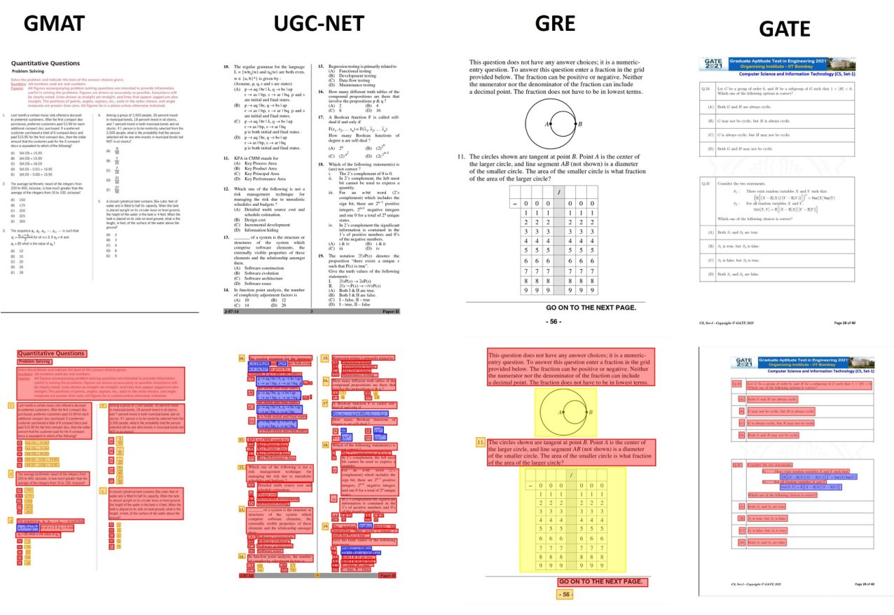
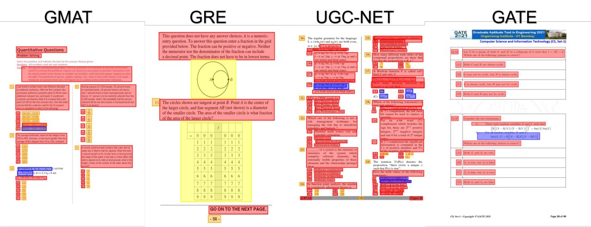
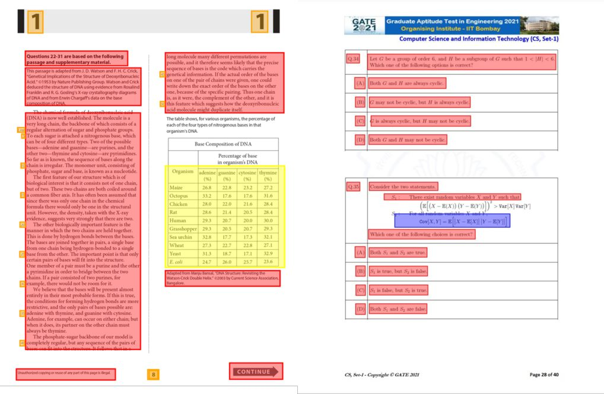

A small dataset for teaching computers to take exam questions apart
Old exam papers are full of useful questions, but many of them exist only as printed pages or scans. A computer sees pixels, not questions. We built MADS, a collection of 230 pages from well-known competitive exams, in which every piece of text, equation, number and picture is marked with a box. We then tried two standard detection models on it to see how well they find those pieces.
The problem
Think of a student preparing for an entrance exam. A teacher would like a question bank that software can search, sort and use to build practice tests. The printed question papers that already exist are not much help, because a question is not just a paragraph. It has a number in the margin, perhaps a diagram, a formula in the middle of a sentence, and a list of answer options below.
Ordinary text recognition (OCR) copes badly with this mixture. Equations and numbers look a little like text, so they confuse it. Before a system can answer such questions, it first has to split the page into its parts. This task is called document segmentation. In our case the parts are marked as rectangles, which is called bounding box detection.
We found plenty of work on question banks that are already digital, and datasets for other kinds of documents. We did not find one that marks equations, diagrams, numbers and text on questions that exist only as images.
What is in MADS
We took pages from five exams: GMAT, GRE, GATE, SAT and UGC-NET. For GATE and UGC-NET we used the official question papers, and for the others, sample or mock questions that anyone can download. We turned the pages into PNG images. The biggest share comes from GATE, at 32.3% of the pages, followed by UGC-NET, GMAT, GRE and SAT (Fig. 2). Some pages have two columns, some put an equation and a picture side by side, and some have numbers, words and formulas on the same line.

Four kinds of box are used: text, number, image and equation. The numbers are things like question numbers and option labels. Three annotators drew the boxes in an open-source tool called Label Studio. They each first labelled 10 practice samples, which we checked and corrected, and then split the rest between them. To count a box as correct, we required the overlap between boxes (an IoU score) to be at least 80, and Cohen's kappa, a measure of how well two people agree beyond chance, to be above 90%.
The labels are lopsided, and we say so in the paper. Text boxes make up about 75% of all annotations, numbers 1,243 (17%), equations 369 (5%) and images only 191 (3%) (Fig. 2).
How we tested it
We tried two well-known detectors. YOLO-v8 is a one-pass model: it looks at the whole page once and predicts all the boxes together. We fine-tuned the medium version, which has 25.9 million parameters, starting from a model that had already been trained on other images. Faster R-CNN works in two steps. It first proposes regions of the page that might hold something, then decides what each one is. We trained it on MADS, with a ResNet-50 as its backbone.
We used the default settings for both models. The pages were split 85 to 15 into training and test sets. We ran every experiment five times and report the average. We scored the models at two strictness levels. At IoU 50, a predicted box counts if it overlaps the true one by at least half. At IoU 90, it must overlap almost completely.
What we found
YOLO-v8 did better than Faster R-CNN in almost every case. At the looser IoU 50 level its accuracy was 93.7%, against 79.1% for Faster R-CNN, a gap of about 15 points (Table 1). At IoU 50 the mean average precision (mAP, the average over the four classes of how well boxes are found and labelled) was 84.25% for YOLO-v8 and 59.6% for Faster R-CNN. At IoU 90 the gap shrank to about 3 points: 97.1% against 94.5% accuracy (Table 1).
Text is the easiest class, which fits with it being the most common. At IoU 50, YOLO-v8's precision was 96.5% on text, but 73.4% on equations and 80.5% on images. For Faster R-CNN, equations (47.6%) and images (35.9%) were much weaker (Table 1). At the strict IoU 90 level, one case went the other way: Faster R-CNN beat YOLO-v8 at finding number boxes.

Results in more detail
The paper's Table 1 breaks the results down by class. We show it as two tables. The first gives the overall accuracy and the average precision for each class: of the boxes a model drew for a class, how many were right. The second gives the average recall for each class: of the true boxes, how many the model found. Each row is one model at one IoU level.
| Model | Accuracy | Equation | Image | Number | Text |
|---|---|---|---|---|---|
| Faster RCNN @ IoU50 | 79.1% | 47.6% | 35.9% | 64.7% | 90.2% |
| YOLO-v8 @ IoU50 | 93.7% | 73.4% | 80.5% | 86.6% | 96.5% |
| Faster RCNN @ IoU90 | 94.5% | 63.8% | 97.5 | 95.3% | 96.9 |
| YOLO-v8 @ IoU90 | 97.1% | 98.3% | 97.5% | 50.8% | 98.02% |
At IoU 50, text is the class both models handle best, with a precision of 90.2% for Faster R-CNN and 96.5% for YOLO-v8. At IoU 90 YOLO-v8 has the higher accuracy, but its precision on numbers is 50.8%, against 95.3% for Faster R-CNN (Table 1).
| Model | Equation | Image | Number | Text |
|---|---|---|---|---|
| Faster RCNN @ IoU50 | 32.1% | 48.3% | 71.7% | 91.2% |
| YOLO-v8 @ IoU50 | 69.2% | 77.1% | 92.02% | 96.5% |
| Faster RCNN @ IoU90 | 97.46 | 100% | 49.9% | 96.9% |
| YOLO-v8 @ IoU90 | 66.3% | 88.9% | 97.6% | 98.7% |
Recall tells a similar story at IoU 50: equations are the hardest class, with 32.1% for Faster R-CNN and 69.2% for YOLO-v8 (Table 1). At IoU 90 the two models trade places on numbers. Faster R-CNN has a precision of 95.3% but a recall of 49.9%, while YOLO-v8 has a precision of 50.8% and a recall of 97.6% (Table 1).
The numbers are averages of five runs. The overall accuracy of YOLO-v8 varied by ±0.5 at IoU 50 and ±1 at IoU 90, and that of Faster R-CNN by ±0.7 and ±2.6. Class-level precision at IoU 50 varied by ±3.6 for equations and ±0.9 for text with Faster R-CNN, and by ±1.5 and ±1.2 with YOLO-v8.
Discussion
We put YOLO-v8's lead down to the way it works. It is a single-shot detector that looks through the whole page at once, while the two-stage Faster R-CNN uses regions to localise objects. Text is the easiest class, which fits with it being the most common. Raising the IoU threshold from 50% to 90% changes the picture. At the looser level more boxes are found and some are wrongly classified. At the strict level YOLO-v8 has trouble with number boxes, even though its precision rises for the other classes.
Both models struggle when equations and images sit together, because it is hard to separate them while keeping their relationship to the question. Because text dominates, the base algorithms lean towards text, and fine-tuning strategies may be needed to improve the other classes. Labels placed inside the boxes of text make this harder.

MADS is small, with 230 pages, and more data is needed for better results. We are still collecting it. We used default settings, such as a learning rate of 0.001 and a batch size of 64, and expect that tuning would help. Right now the dataset only separates text, equations, figures and numbers and does not read what is inside them. Finer separation may come in later versions.
Our next steps are a larger and broader dataset, and questions that large language models and vision-language models can process. We also want to link it to GPT-based services that retrieve solutions, and to build personalised mock tests. The sample is released under a Creative Commons licence on GitHub.
Sources
The figures and tables listed here are taken from the paper cited at the top of this page; the numbers quoted in the text come from it too.
- Figures: Fig. 1, Fig. 3, Fig. 4
- Tables: Table 1: accuracy, precision and recall of Faster R-CNN and YOLO-v8 at two overlap thresholds, by class
Acknowledgements
Swarnendu Ghosh is thankful for the infrastructure support from the IEM Centre of Excellence for Data Science and the Innovation & Entrepreneurship Development Cell, IEM Kolkata.
Cite the paper
U Aich, Swarnendu Ghosh, T Saha (2024). MADS: A Multi-modal Academic Document Segmentation Dataset for Smart Question Bank Management. 2nd Symposium on NLP for Social Good (NSG), CEUR-WS, Vol. 3764.
@inproceedings{aich2024mads,
author = {Aich, U and Ghosh, Swarnendu and Saha, T},
title = {{MADS:} A Multi-modal Academic Document Segmentation Dataset for Smart Question Bank Management},
booktitle = {2nd Symposium on NLP for Social Good (NSG)},
volume = {3764},
year = {2024},
url = {https://ceur-ws.org/Vol-3764/#paper1}
}